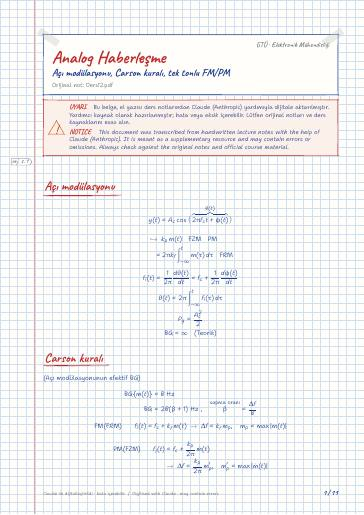

Analog Communication Systems · Digital lecture note
Lecture 12 – Angle modulation, Carson's rule, single-tone FM/PM
Analog Haberleşme – Açı modülasyonu, Carson kuralı, tek tonlu FM/PM
- Course
- Analog Communication Systems (ELM361)
- Semester
- Semester 5 · Fall 2023–24
- Format
- PDF · 11 pages · 0.2 MB · handwriting-style LaTeX
- Language
- Turkish
- Original note
- Ders12.pdf
Open the PDF (0.2 MB)LaTeX source (.tex)Original handwritten note

What is in this note?
Section headings of the note (in Turkish):
- Açı modülasyonu
- Carson kuralı
- Saf sinüsoidal işaretin açı modülasyonu
- Bessel fonksiyonunu inceleyelim
- Periyodik mesaj işaretinin açı modülasyonu
Text of the note
Show as plain text (Turkish; formulas and drawings are not included)
(Açı modülasyonunun efektif BG)
[ m(t) terimi altında küçük not: ]
Saf sinüsoidal işaretin açı modülasyonu
[turuncu çizgilerle T_m ve f_m terimleri sadeleştirilmiş]
analitik olarak hesaplayamayız, numerik olarak hesaplanır
Bessel function of the 1st kind and nth order
(n. mertebeden 1. tür Bessel fonk.)
Bessel fonksiyonunu inceleyelim
Açı modülasyonu lineer değildir.
Find the expression for the modulated signal and determine how many harmonics should be selected to contain 99 % of the modulated signal power.
Mesajı gönderirken Band pass filtreden geçirip yollanabilir.
Bu bant genişliğinde bir IF kullanılabilir.
a) Estimate BWs of y_FM(t) and y_PM(t)
b) Repeat part (a) if the message signal amplitude is doubled
d) Comment on the sensitivity of FM and PM BWs to the spectrum (amplitude) of m(t)
d) iki modülasyonun da bant genişliği genliğe çok duyarlıdır
d) frekans modülasyonu frekansa çok duyarlı değil ama PM modülasyonu çok duyarlıdır.
An angle modulated signal with carrier frequency f_c=10^6 Hz is described by the equation
a) Find the power of the modulated signal
b) Find the max frequency deviation Δ f
c) '' the deviation ratio β
d) '' the max phase deviation Δφ
e) Estimate the BW of y_EM(t)
Haftaya 11'de quiz
Periyodik mesaj işaretinin açı modülasyonu
yani: 3. harmonik birincinin %11'i;
Efektif BG'ni n=3 . harmonik belirler
Bant genişliği iki katına çıktı
PM bant genişliği yarıya indi, frekans yarıya inince
FM zamandaki genişliğe pek duyarlı değil